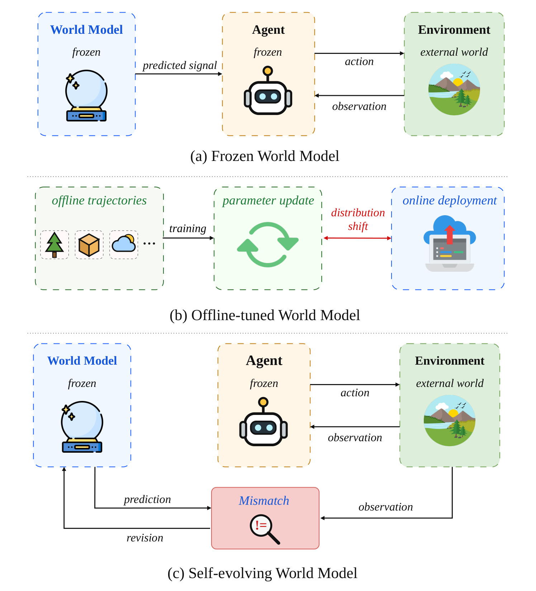
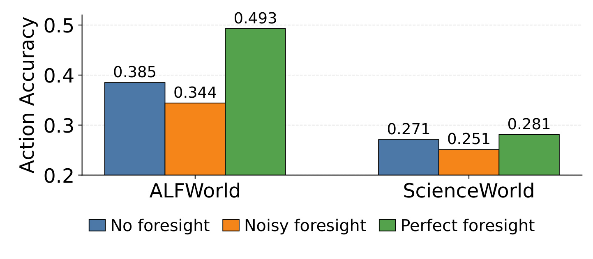
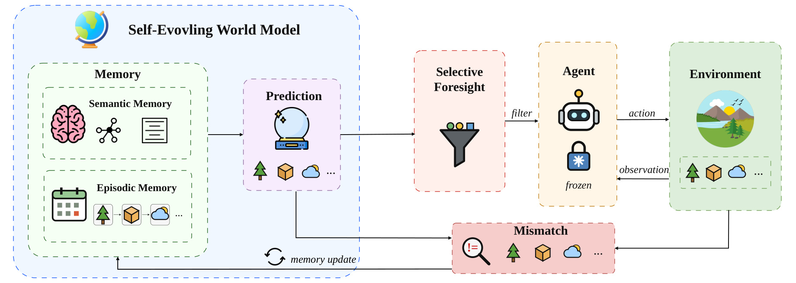
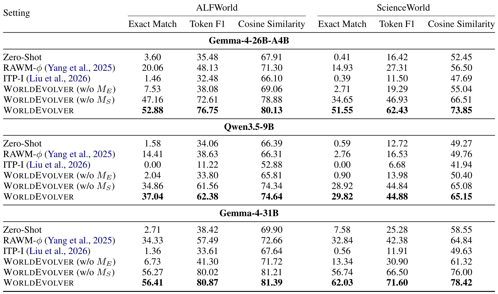
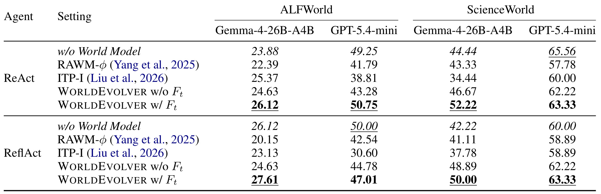
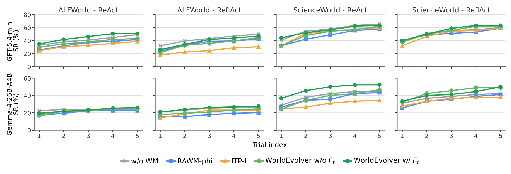
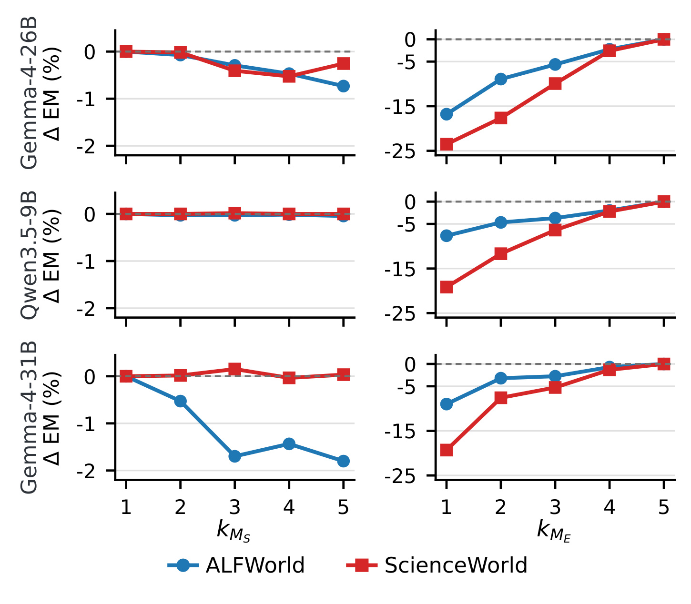
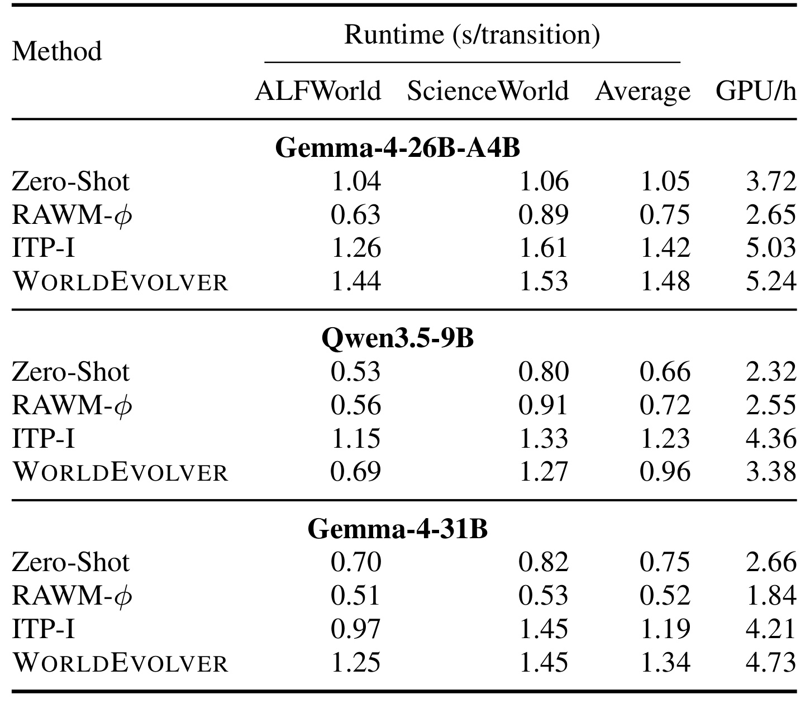

WorldEvolver：面向 LLM Agent 规划的自演化世界模型
Self-Evolving World Models for LLM Agent Planning 这篇论文由 Xuan Zhang 等人完成，一作机构是新加坡国立大学，合作机构包括 Singapore University of Technology and Design 与 Singapore Management University。论文入口链接：arXiv:2606.30639。事实包中记录的代码/项目页状态是：未在 arXiv 页面或 PDF 首页核验到公开代码仓库。本文关注的问题不是再训练一个更大的 agent，而是把 world model 作为冻结 agent 的外部预测器，在部署交互中利用真实 transition 和预测错误持续修订上下文。
World model 可以给长程 LLM agent 提供行动后果的预判，但这种 foresight 只在预测可靠时有帮助；一旦预测噪声被直接塞进 agent 推理上下文，它可能被忽略、误用，甚至比完全不给预测更差。论文要解决的核心矛盾是：部署环境持续变化，在线参数更新又昂贵且容易带来副作用，因此世界模型必须在不更新 agent 和模型参数的条件下，利用交互中暴露出的真实转移与预测-观测不一致来修订自己的可见证据。
1. 背景和问题
LLM agent 在文本游戏、网页导航、工具使用这类长程任务中，真正难的地方往往不是“下一步能不能生成一个动作”，而是“这个动作会把环境带到哪里”。传统 ReAct 式 agent 可以把当前 observation、历史 action 和 task goal 放进 prompt，然后直接采样动作；memory-augmented agent 会进一步复用过去的反馈、反思、技能或经验。但是这些路线大多仍在回看已经发生的东西，缺少一个能在行动前回答“如果我现在这么做，会看到什么后果”的预测模块。World model 的价值就在这里：它把候选动作映射到未来 observation，让 agent 在执行前得到一个可用于推理的预测信号。
论文把这个信号称为 foresight。foresight 的直觉很强，因为人类规划也常常依赖内部模拟：先想象动作后果，再决定是否行动。可是 LLM agent 场景里的 world model 与真实环境之间存在明显的部署时分布漂移。环境任务会换、对象状态会变、前几步 action 会改变后续 observation 的约束，冻结的 world model 很容易在某些局部状态上失真。更麻烦的是，world model 的错误并不是无害噪声：一旦预测文本被交给 agent，它会参与下一步动作生成，错误预测就可能把 agent 带到更差的轨迹。

Figure 1 把本文的问题设定压缩成三种路线。左上角的 frozen world model 只负责向 frozen agent 输出 predicted signal，它不会根据 deployment-time interaction 修正自己，因此面对新任务实例时可能一直重复相同误差。中间的 offline-tuned world model 试图通过离线轨迹和参数更新改善预测，但这条路在 LLM 规模下成本高，而且 online deployment 与训练数据之间仍有 distribution shift。底部的 self-evolving world model 才是本文主张的形态：world model 和 agent 都保持 frozen，环境执行后产生的 observation 与之前 prediction 发生 mismatch 时，系统把这个 mismatch 转成可审计的外部修订信号，再反馈给后续预测。图里最关键的不是“多了一个 memory 箭头”，而是它把适配位置从参数空间移到了 deployment-time context，使每一步真实交互都能成为后续世界模型预测的证据。
从工程角度看，这个定位比“持续微调 world model”更贴近 LLM agent 的在线部署现实。在线参数更新通常需要保存梯度、回放数据、控制灾难性遗忘，还要处理过编辑和安全副作用；而文本环境交互天然会产出 action-transition 记录和 prediction-observation mismatch，这些都可以直接作为 prompt-level evidence。WorldEvolver 的核心问题因此可以表述为：如何把真实 transition 当作具体经验，把 mismatch 当作抽象规则来源，同时在预测不够可靠时拒绝把 foresight 暴露给 agent。

Figure 2 是论文给出的预备 oracle study，它用 Gemma-4-26B-A4B 在 Word2World evaluation set 上比较三种 agent 输入：没有 foresight、noisy foresight、perfect foresight。ALFWorld 中没有 foresight 的 action accuracy 是 0.385，noisy foresight 降到 0.344，而 perfect foresight 升到 0.493；ScienceWorld 中三者分别是 0.271、0.251、0.281。这个结果说明两件事：第一，正确预测确实能给动作选择带来额外信息，尤其在 ALFWorld 中提升明显；第二，错误预测不是“最多没用”，它会让 agent 的动作更偏离 teacher action。WorldEvolver 后面设计 Selective Foresight，不是为了形式上多一个 confidence gate，而是因为图中已经显示：当 world model 还不够可靠时，把所有预测都交给 agent 可能比不用 world model 更糟。
这篇论文与一般 memory agent 的区别也在这里。普通 memory 主要帮助 agent 复用过去经验；WorldEvolver 的 memory 直接服务 world model 预测，而且区分两种知识形态：Episodic Memory 保存真实发生过的 action transition，用来做检索式模拟；Semantic Memory 保存从错误中抽取的持久规则，用来约束后续预测。前者像“我以前做过相似动作，当时环境如何变化”，后者像“某类动作不会改变某个属性，或者某个对象状态应保持不变”。这种设计让 world model 的自演化不依赖修改权重，而依赖不断改善输入给冻结模型的上下文。
2. 方法
WorldEvolver 的方法章可以按原文顺序读成四层：先把 agent planning 写成部分可观测交互中的 one-step foresight 问题；再定义外部 memory store；然后解释两类 memory 如何在不更新参数的条件下修订 world model 输入；最后用 Selective Foresight 和闭环 update 解决预测是否暴露给 agent、以及 mismatch 应归因到哪个实际动作的问题。本文最核心的机制是把“模型需要适配”的压力转移为“上下文证据需要演化”：冻结 agent 与冻结 world model 都不变，变化的是每次预测时注入的 transition evidence、heuristic rule 和 confidence gate。
2.1 Problem Formulation：把规划问题限制在下一步 foresight
论文把任务写成一个部分可观测交互过程。环境有隐藏状态、动作空间、观测空间和转移函数，但 agent 不能直接访问完整状态，只能看到文本 observation 和自己已经执行过的 action。agent-visible state、agent policy 和 world model prediction 分别写成：
符号解释：$o_i$ 表示第 $i$ 步文本观测，$a_i$ 表示动作，$s_t$ 是当前时刻 agent 可见的完整交互历史；$\pi_\theta$ 是冻结的 agent policy，$W_\theta$ 是冻结的 world model，$\hat{o}_{t+1}$ 到 $\hat{o}_{t+K}$ 是候选动作后的未来 observation。论文主要聚焦 one-step foresight，因为下一步预测最直接影响当前动作决策，而真实的 $o_{t+1}$ 会在执行后立刻出现，可以马上用于判断预测是否可靠。这个设定避免了长 horizon imagined rollout 里的误差连乘，也使 Semantic Memory 能从每一步 mismatch 中得到清晰监督。
这个 formulation 的边界很重要。WorldEvolver 不训练一个新的 policy，不微调 world model，也不让 agent 直接访问隐藏环境状态。它只改变 world model 的调用上下文，并决定预测是否进入 agent 输入。这样实验中的性能差异可以更明确地归因到 world-model evidence 的组织方式，而不是 agent 本身能力变强。
2.2 WORLDEVOLVER：两类记忆如何替代参数更新
WorldEvolver 给冻结 world model 增加一个非参数 memory store，其中 Episodic Memory 保存真实 action transition，Semantic Memory 保存从 prediction-observation mismatch 中提炼的规则。对应公式是：
符号解释：$M_t$ 是第 $t$ 步可供 world model 使用的外部记忆；$M_t^E$ 是 episodic memory，$M_t^S$ 是 semantic memory；$k_{ME}$ 是检索的 transition 数量，$(o_i,a_i,o_{i+1})$ 是过去真实执行后的观测-动作-下一观测，$\operatorname{sim}(a_t,a_i)$ 是当前动作和历史动作之间的 open-vocabulary token Jaccard score；$M_{t+1}^{E}$ 表示执行动作后，把新的真实 transition 追加进 episodic memory。这里最有意思的是检索键：作者没有让长 state 描述主导 retrieval，而是直接按 action token 找相似转移，因为本文关心的是“这个动作在类似环境中通常造成什么变化”。

Figure 3 展示了方法的完整信号流。左侧 memory 里有 Semantic Memory 和 Episodic Memory；中间 prediction 模块在当前 observation、candidate action 和 memory evidence 条件下生成未来观测；右侧 Selective Foresight 决定是否把预测交给 frozen agent；agent 执行动作后，environment 返回 observation；如果 prediction 和 observation 不一致，Mismatch 模块把差异转成 memory update。这个图的重点是闭环位置：memory 既参与预测，又由真实交互反馈更新。Episodic Memory 更像 exploitation，它把相似动作下真实发生过的转移拿来做类比；Semantic Memory 更像 exploration，它从错误中总结可复用规则，补充单个 transition 难以覆盖的抽象约束。Selective Foresight 放在 prediction 与 agent 之间，说明 WorldEvolver 不把“预测质量提升”和“预测一定要暴露给 agent”混为一谈。
Semantic Memory 处理的是另一个层面：world model 预测错了之后，系统不直接把 raw mismatch 当成文本堆进 prompt，而是先把预测 observation 和真实 observation factorize 成对象、属性、关系和动作的 tuple，再让 LLM critic 产出规则。这个过程可以写成：
符号解释：$\hat{o}_{t+1}$ 是预测观测，$o_{t+1}$ 是真实观测，$g$ 把二者转换为 factorized tuples，$\hat{z}_{t+1}$ 与 $z_{t+1}$ 分别是预测和真实的结构化状态，$r_i$ 是 LLM critic 从差异中提炼的 heuristic rule，$\Delta M_t^S$ 是一批 mismatch 产生的规则-证据更新。这样做的好处是，系统比较的是“冰箱是否打开、苹果是否在冰箱里”这类状态事实，而不是表面文本是否相似。它的风险也很清楚：如果 factorization 或 critic 把偶然现象总结成规则，后续预测会被错误规则持续约束，所以作者给规则维护 evidence score，并且只把正分规则放进上下文。
2.3 Selective Foresight：只把高置信预测暴露给 agent
Selective Foresight 解决的是“预测应该何时进入 agent 上下文”。当后端模型能返回 token probability 时，WorldEvolver 用生成序列的平均 token log probability 来估计置信度，并把低于阈值的预测替换为空 foresight：
符号解释：$y_i$ 是 world model 生成的第 $i$ 个 token，$n$ 是预测文本长度，$p_\theta$ 是模型给该 token 的条件概率，$\ell_t$ 是平均 log probability，$q_t$ 是几何平均 token probability，$\tau$ 是阈值，$F_t$ 是 agent-visible foresight。若 $q_t\ge\tau$，agent 看到预测的下一步 observation；若低于阈值，agent 仍按原始状态推理。这个门控不是为了证明概率完全校准，而是为了在部署中提供一个可操作的 abstention 机制：预测越不稳定，越不应该被当作 agent 的行动依据。
Selective Foresight 也解释了为什么 WorldEvolver 不是一个单纯的 retrieval-augmented predictor。即使 memory 让 world model 预测更准，错误预测仍会存在；一旦错误预测进入 agent prompt，它可能改变下一步动作。论文 Figure 2 已经说明 noisy foresight 可能比 no foresight 更差，因此方法必须在 prediction 与 policy 之间放一个“是否暴露”的判断层。后面 Table 2 的结果也显示，带 $F_t$ 的版本在每个规划设置中都至少不弱于去掉 selective foresight 的版本。
2.4 Closed-loop planning update：草稿动作、二次对齐与记忆更新
Algorithm 1 的闭环步骤可以理解为两次动作条件化。第一轮，agent 根据 $s_t$ 采样 draft action $a_t^{(0)}$，WorldEvolver 用这个 draft action 去检索 Episodic Memory，并带着 Semantic Memory 询问 world model，得到预测 $\hat{o}_{t+1}$ 和置信度 $q_t$。Selective Foresight 之后生成 $F_t$，agent 再根据 $(s_t,F_t)$ 采样实际执行动作 $a_t^{(1)}$。如果 $a_t^{(1)}$ 与 draft action 不同，系统需要重新用实际动作查询 world model，否则后续 Semantic Memory 会拿“未执行动作的预测”和“实际动作的结果”比较，导致错误归因。
这个二次对齐是方法里很容易被忽略的细节。World model 预测的 supervision 来自环境返回的 $o_{t+1}$，但 $o_{t+1}$ 只对应最终执行的 action。若直接用 draft action 的预测更新 mismatch，Semantic Memory 可能把 agent 自己改动作造成的差异误判为世界模型错误。WorldEvolver 通过 step 7 的重新预测，把 learning signal 对齐到 executed action。随后系统执行动作、追加 episodic transition，并在 factorized observation 空间中计算 semantic rule update。整套流程没有改变 $\pi_\theta$ 或 $W_\theta$，但每一步都会改变下一次 world model 调用时能看到的外部证据。
3. 实验结果
实验分成两个主问题。第一，world model 本身预测未来 observation 的能力是否提高；第二，提高预测以后，agent planning 是否真的变好。作者使用 Word2World 评估 prediction alignment，数据来自 ALFWorld 和 ScienceWorld 的 transition；使用 AgentBoard 评估下游规划，包含 134 个 ALFWorld tasks 和 90 个 ScienceWorld tasks，每个配置跑 best-of-5 trial，最长 30 步。Baseline 包括 Zero-Shot、RAWM-phi 和 ITP-I，agent 类型包含 ReAct 与 ReflAct。这个设置的优点是把“预测像不像真实未来”和“预测能不能改善行动”拆开测，避免只在一个指标上证明 world model 有用。

Table 1 是预测准确率主表，三组 backbone 分别是 Gemma-4-26B-A4B、Qwen3.5-9B 和 Gemma-4-31B，环境是 ALFWorld 与 ScienceWorld，指标包括 Exact Match、Token F1 和 Cosine Similarity。最显著的事实是 full WorldEvolver 在所有 backbone 和两个环境上都是最高。以 Gemma-4-26B-A4B 为例，ALFWorld 的 Exact Match 从 Zero-Shot 的 3.60、RAWM-phi 的 20.06 提升到 WorldEvolver 的 52.88；ScienceWorld 的 Exact Match 从 RAWM-phi 的 14.93 提升到 51.55。消融也很有信息量：去掉 Episodic Memory 后，性能只比 Zero-Shot 略好；去掉 Semantic Memory 后，预测已经大幅提升，但 full model 仍进一步提高，尤其 ScienceWorld 中 Gemma-4-31B 从 56.74 提升到 62.03。这个表说明主要增益来自真实 transition 检索，而 mismatch-derived semantic rules 能在更复杂环境中补足抽象约束。值得注意的是，ITP-I 在很多格子里低于 Zero-Shot，说明“想象未来”如果缺少真实 grounding，会产生过度生成和偏离真实 observation 的问题。
从方法解释看，Table 1 对 Episodic Memory 的支持最强。RAWM-phi 也做 retrieval，但它从固定 Word2World corpus 里检索，且依赖完整 state-action embedding；WorldEvolver 的 episodic memory 则严格在线积累，并按 action token 做检索。即使后者不能预先看到完整部署轨迹，它仍在多数指标上远超 RAWM-phi，这表明对于文本环境的下一步预测，动作本身往往是最关键的转移条件。Semantic Memory 的贡献则更像规则修正：在 ALFWorld 这种比较规则化的家庭任务里，object state persistence 可以帮助模型避免凭空改变对象；在 ScienceWorld 中，任务动力学更复杂，语义规则和真实 transition 的互补性更明显。

Table 2 回答下游 planning 是否受益。表中比较的是 ReAct 与 ReflAct 两类 agent，在 ALFWorld 和 ScienceWorld 上的 Success Rate。WorldEvolver w/o Ft 已经是最强 world-model method，但 w/ Ft 进一步在所有设置中持平或提高。比如 Gemma-4-26B-A4B + ReAct 在 ScienceWorld 上，w/o World Model 是 44.44，WorldEvolver w/o Ft 是 46.67，WorldEvolver w/ Ft 到 52.22；ReflAct + Gemma-4-26B-A4B 在 ALFWorld 上，w/o World Model 是 26.12，w/o Ft 是 24.63，加入 selective foresight 后变为 27.61。GPT-5.4-mini 的结果更混合，部分格子上 WorldEvolver w/ Ft 仍低于 no-world-model baseline，但作为 world-model method 它总体最稳。这个表支持一个更细的结论：world model prediction accuracy 提升不自动等于 planning success 提升，只有在预测被合适地过滤、并且 agent 仍有提升空间时，foresight 才能稳定转化为完成率。
Table 2 也暴露了方法边界。RAWM-phi 和 ITP-I 经常低于不用 world model 的 baseline，这印证 Figure 2 的 noisy foresight 风险。WorldEvolver w/o Ft 平均比 RAWM-phi 好，说明在线记忆修订能改善世界模型信号；但有些 GPT-5.4-mini 场景中，强 planner 本身已经能完成较多任务，额外 foresight 未必带来正收益。Selective Foresight 的作用不是让所有场景都超过 no-world-model，而是避免低置信预测直接污染 agent 推理。对于实际部署，这意味着 world model 模块最好以可拒绝、可审计的建议形态进入 agent，而不是作为强制上下文。

Figure 4 把 planning success 按 trial index 画成 cumulative best-of-L 曲线，能看出 online continual learning 的时间维度。横轴从第 1 次 trial 到第 5 次 trial，曲线越陡说明更多尝试带来的新增成功越多。Gemma-4-26B-A4B 在 ScienceWorld 上最能体现 WorldEvolver 的优势：WorldEvolver w/ Ft 和 w/o Ft 随 trial 增长逐渐拉开与 RAWM-phi、ITP-I 的距离，说明 episodic memory 与 semantic memory 在同一环境中不断积累后，后续 replanning 更容易利用到有用 evidence。GPT-5.4-mini 的曲线分离较小，符合 Table 2 中强 planner 提升空间有限的现象。这个图补充了主结果表没有直接表达的点：WorldEvolver 的收益不只是单次 prompt 变强，而是部署过程中的 evidence reuse 让后续尝试越来越有信息。

Figure 5 讨论 memory hyperparameter。左列改变 $k_{MS}$，右列改变 $k_{ME}$，指标是相对默认设置的 Exact Match 变化。图中最清楚的趋势是：$k_{ME}$ 从小到大时，ALFWorld 和 ScienceWorld 的曲线明显从负值回到接近 0，特别是 Gemma-4-26B-A4B 与 Gemma-4-31B 在 ScienceWorld 中，较小 $k_{ME}$ 会造成十几个到二十多个点的 Exact Match 损失；而 $k_{MS}$ 的变化大多只在 0 附近小幅波动。作者据此使用 $k_{ME}=5$ 和 $k_{MS}=1$。这说明 WorldEvolver 的主干不是复杂的语义规则批处理，而是足够多、足够相关的真实 transition grounding。Semantic Memory 有价值，但它更像把失败案例抽象成规则的补充层；若没有足够 episodic evidence，世界模型仍缺少当前环境动作后果的具体锚点。

Table 4 给出效率侧证据，单位是 seconds per transition 和总 GPU hours。Gemma-4-26B-A4B 上，WorldEvolver 平均每个 transition 1.48 秒，ITP-I 是 1.42 秒，Zero-Shot 是 1.05 秒，RAWM-phi 是 0.75 秒；Qwen3.5-9B 上 WorldEvolver 平均 0.96 秒，比 ITP-I 的 1.23 秒更低；Gemma-4-31B 上 WorldEvolver 1.34 秒，ITP-I 1.19 秒。这个表说明 WorldEvolver 不是零成本增强，它比 Zero-Shot 和多数 RAWM-phi 设置更慢，因为需要检索、规则上下文和 mismatch 处理；但它与 ITP-I 的量级接近，同时在 Table 1 上显著更准。对工程落地而言，这个 trade-off 可接受与否取决于任务价值：如果 agent 每步动作成本高或失败代价高，额外 0.3-0.5 秒可能值得；如果是高吞吐、低风险任务，则需要把 selective foresight 和 memory update 做成可配置开关。
总体来看，实验最有说服力的链条是：Table 1 证明 WorldEvolver 改善 prediction fidelity；Table 2 证明这种改善在部分 planning 设置中转化为 success rate；Figure 4 证明在线 memory accumulation 随 trial 产生额外收益；Figure 5 说明 episodic retrieval 是主要驱动；Table 4 则约束了成本口径。论文没有只给一个单点 SOTA 数字，而是把 world model 的价值拆成预测、规划、在线积累、超参和效率几层证据。这个证据链也解释了为什么 full WorldEvolver 的方法设计是三模块，而不是只做 retrieval 或只做 confidence gate：retrieval 给具体 grounding，semantic rules 给抽象修正，selective foresight 控制预测进入 agent 的时机。
4. 总结
4.1 我的判断
WorldEvolver 的贡献在于把 LLM agent planning 中的 world model 从“离线训练好的预测器”改造成“部署中持续修订的上下文系统”。它没有声称冻结 LLM 参数后就能解决所有环境建模问题，而是给出了一条更现实的路径：真实 transition 进入 Episodic Memory，预测错误进入 Semantic Memory，低置信预测被 Selective Foresight 拦截。这个组合的优点是可审计、可替换、易插入现有 ReAct/ReflAct agent；缺点是 memory 的质量、检索键、factorization 和 confidence calibration 都会直接影响最终效果。
我认为这篇论文对 agent 系统工程的启发有三点。第一，world model 输出不要默认等价于事实，它应该有置信度和拒答机制。第二，部署时交互日志不仅能用来做离线分析，也能成为下一步 prediction context 的在线证据。第三，prediction 指标和 planning 指标必须分开看；一个更像真实未来的 world model 仍可能因为暴露方式错误而损害 action selection。WorldEvolver 的实验恰好把这三点连起来。
4.2 局限与风险
第一，Semantic Memory 依赖 observation factorizer 和 LLM critic，把文本 observation 转成 tuple 再抽规则。如果 factorization 漏掉关键状态，或者 critic 把偶然任务现象总结成 persistence rule，错误规则会在后续预测中反复出现。第二，Selective Foresight 采用 token probability 的几何平均作为 confidence，这个分数在不同模型、不同输出长度和不同后端实现之间未必天然校准；论文用阈值表和附录校准图缓解，但线上系统仍需要环境级校准。第三，WorldEvolver 的收益在强 planner 上不稳定，GPT-5.4-mini 的部分设置没有超过 no-world-model baseline，说明更强 agent 可能已经内化了足够的环境策略，额外 foresight 的边际价值有限。第四，实验环境主要是 ALFWorld、ScienceWorld、Word2World 和 AgentBoard，仍属于文本环境与 benchmark 任务；更开放的网页、工具链或真实业务流程中，action space、observation noise 和反馈延迟会更复杂。
4.3 后续跟进
后续最值得跟进的方向有三个。第一，可以把 Semantic Memory 的规则抽取做成可验证程序：规则不仅由 LLM critic 生成，还要在后续 transition 上自动统计支持率、冲突率和适用条件，避免长期污染上下文。第二，可以研究更稳健的 foresight confidence，例如结合自一致性、检索证据覆盖率、tuple-level mismatch 历史和任务阶段，而不是只用 token probability。第三，可以把 WorldEvolver 接到更真实的 multi-step tool agent 或 web agent 中，观察 memory 增长、检索延迟、规则冲突和上下文预算之间的权衡。若要复现这篇论文，我会优先复现 Table 1 的 prediction task，因为它能最直接检验 Episodic Memory 与 Semantic Memory 是否真正改善下一步 observation；再复现 Table 2 的 planning task，确认预测提升能否通过 selective foresight 稳定转成动作成功率。